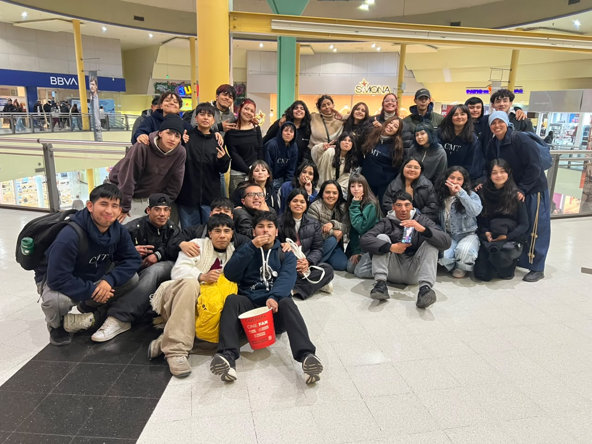

Una historia compartida
El Centro Madre Teresa es una comunidad que fue creciendo a través de los encuentros, la fe, el servicio y el acompañamiento a niños y jóvenes. Su historia está formada por personas que, con su compromiso, fueron dando vida a distintos grupos y actividades.

Nuestros comienzos
Los comienzos de esta historia están vinculados a la llegada de las Pequeñas Madres de los Pobres desde un centro relacionado con Lourdes, en José C. Paz, con la aceptación del obispo Damián Danini.

A partir de esta experiencia comenzó a tomar forma una comunidad dedicada al encuentro, la vida espiritual y el servicio a los demás.

El entorno y los espacios del centro también forman parte de su historia. En ellos se desarrollan encuentros, momentos de oración y experiencias compartidas.
Espacios para la oración
La fe ocupa un lugar importante en la vida de la comunidad. Dentro del centro existen espacios destinados a la oración y al encuentro con Dios, vividos de distintas maneras por las hermanas y los jóvenes.

La capilla de las hermanas
La Capilla PMP es el espacio donde las hermanas se reúnen para rezar. Forma parte de su vida espiritual cotidiana y de su camino de fe.

La Capilla de Guadalupe
La Capilla de Guadalupe es un espacio importante para los jóvenes del centro, donde pueden acercarse a la oración y vivir su fe como parte de la comunidad.
Una comunidad que crece
Entre las primeras experiencias se destacó un grupo de preadolescentes mujeres. Lo que comenzó con alrededor de cinco integrantes fue creciendo hasta reunir a más jóvenes.

En los encuentros compartían momentos de acompañamiento espiritual, juegos, música y servicio. También participaban en actividades vinculadas a la Parroquia América.
Con el tiempo, estos encuentros fueron fortaleciendo los vínculos y el sentido de comunidad.

La música y la evangelización son otras formas de compartir la fe y acercarse a los demás. A través de estas experiencias, los jóvenes pueden poner sus talentos al servicio de la comunidad.
Celebraciones y momentos compartidos
Las celebraciones son oportunidades para reunirse, agradecer y renovar los vínculos que unen a la comunidad. El día de Madre Teresa es una ocasión especial para recordar su ejemplo y compartirlo con los demás.

Además de las celebraciones religiosas, también hay momentos de convivencia y recreación que permiten conocerse mejor, compartir experiencias y construir amistades.

El legado de Madre Teresa

La figura de Madre Teresa inspira el deseo de vivir con amor, sencillez y servicio a los demás. Su ejemplo invita a reconocer el valor de cada persona y a hacer del servicio una parte concreta de la vida cotidiana.

Una historia que continúa
Cada grupo, cada encuentro y cada persona forman parte de una historia que sigue construyéndose. El Centro Madre Teresa busca continuar siendo un lugar de encuentro, acompañamiento y servicio, inspirado en el deseo de hacer de la vida algo hermoso para Dios.